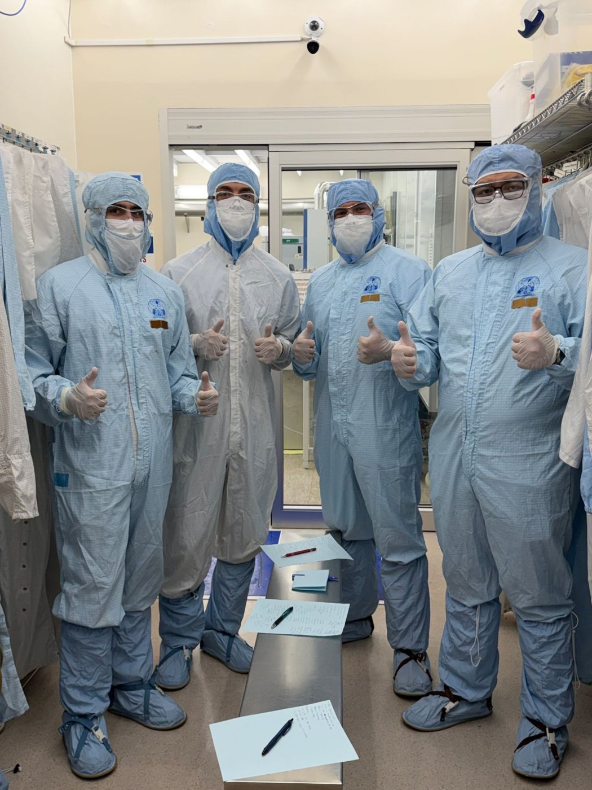

Clean
Substrate prep and cleanroom protocol
Hands-on
| Substrate | Si coupons (FURI) |
|---|---|
| Clean | Acetone, before coating |
| Cleanroom | ASU NanoFab gowning, contamination control (EEE 435) |


My FURI coupons are acetone-cleaned before the resin goes on. In EEE 435 I gowned into the ASU NanoFab cleanroom for wafer-processing labs and trained in contamination control and cleanroom protocol.